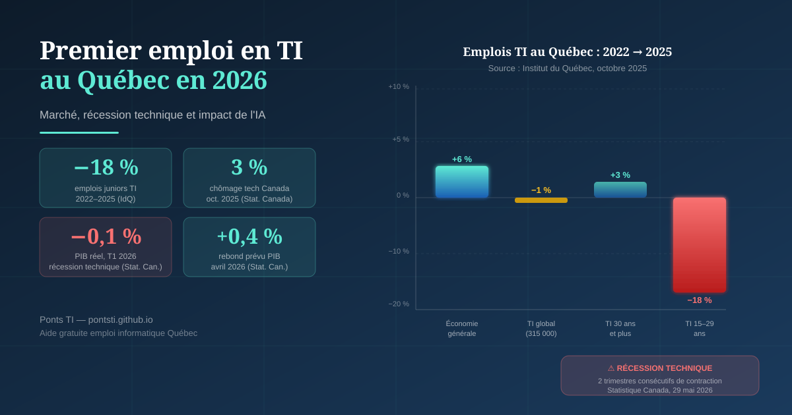

Premier emploi en TI au Québec en 2026 : lire la situation telle qu'elle est

Sources : Institut du Québec (oct. 2025), Statistique Canada (mai 2026)
Je travaille en informatique à Montréal depuis 13 ans. Je suis passé par l'Algérie, la France, puis le Québec. J'ai fondé Ponts TI pour partager ce que j'ai appris — et éviter à d'autres le tâtonnement que j'ai connu.
Quand des gens me contactent aujourd'hui pour décrocher un premier emploi en TI au Québec, je leur dis la vérité : le marché a changé depuis 2022. Pas de façon catastrophique, mais assez pour que la préparation compte vraiment.
📊 Ce que les chiffres disent réellement
Entre 2022 et les huit premiers mois de 2025, les emplois en TI au Québec ont globalement stagné : une perte nette d'environ 3 600 postes sur un total de 315 000, soit −1 %. Pendant la même période, l'ensemble de l'économie québécoise progressait de +6 %. Ce décrochage par rapport au reste de l'économie est réel et documenté.
Mais ce chiffre global cache une réalité encore plus contrastée :
2022 → 2025
(−11 000 postes)
même période
(+7 400 postes)
T1 2026 (annualisé)
récession technique
secteur tech Canada
octobre 2025
Sources : Institut du Québec (oct. 2025) ; Statistique Canada, enquête population active (oct. 2025) ; Statistique Canada, PIB (29 mai 2026).
Ce qui ressort clairement : les postes d'entrée — ceux que cherchent précisément les nouveaux arrivants et les personnes en reconversion — sont les plus touchés. Ce n'est pas une impression. C'est documenté.
🔎 Plusieurs causes, pas un seul coupable
Il serait réducteur d'attribuer cette baisse uniquement à l'intelligence artificielle. L'Institut du Québec identifie plusieurs facteurs simultanés dans son analyse de décembre 2025 :
- Normalisation post-pandémie : les embauches massives de 2020-2022 (télétravail, transformation numérique) ont créé une surchauffe artificielle du recrutement TI. Le marché se rééquilibre.
- Fin des crédits d'impôt dans le jeu vidéo : la réduction annoncée en mars 2024 a freiné les investissements de studios internationaux au Québec, touchant directement des milliers de postes techniques.
- IA générative : certaines tâches routinières dévolues aux profils juniors (génération de code simple, tests de base, documentation) peuvent être partiellement automatisées. Cela n'efface pas les postes — mais modifie ce qu'on attend d'un débutant.
- Concurrence accrue : la généralisation du télétravail a ouvert les recrutements à des candidats hors région, voire hors pays, augmentant le bassin de candidature pour chaque offre.
Une nuance importante sur l'IA
Statistique Canada a montré que l'emploi dans certains métiers TI classés à risque d'être remplacés par l'IA — dont les ingénieurs en logiciels — a en fait augmenté entre novembre 2022 et décembre 2025. L'IA automatise des tâches, pas des rôles entiers. Ce qui change, c'est le niveau d'attente envers un candidat junior.
📰 Le contexte économique de ce printemps
Un élément s'est ajouté le 29 mai 2026. Statistique Canada a publié ses données de PIB pour le premier trimestre : l'économie canadienne a reculé de 0,1 % en rythme annualisé, après une contraction de 1,0 % au quatrième trimestre 2025. Deux trimestres consécutifs de baisse : c'est la définition courante d'une récession technique.
À relativiser : Statistique Canada précise que le PIB réel trimestriel brut est resté pratiquement stable — la conversion en taux annualisé amplifie les petites variations. Plusieurs économistes, dont ceux de la Banque TD et de Capital Economics, estiment que la récession technique est probablement déjà terminée : les premières données d'avril 2026 indiquent un rebond de +0,4 %, porté par l'extraction de ressources et le secteur manufacturier.
Ce qui reste vrai pour le marché de l'emploi : les investissements des entreprises ont reculé pour le cinquième trimestre consécutif. En pratique, cela se traduit par des processus d'embauche plus lents, des budgets plus serrés, et une préférence pour les profils immédiatement opérationnels. Les postes juniors — qui demandent plus d'encadrement — sont les premiers à être mis en attente.
✅ Ce qui reste favorable
Le tableau n'est pas entièrement sombre. Quelques données à garder en tête :
- Taux de chômage TI très bas : 3 % en octobre 2025 au Canada pour le secteur technologique, bien sous la moyenne nationale de 6,5 %. La demande existe, elle s'est simplement déplacée vers des profils plus spécialisés.
- Domaines qui recrutent activement : cybersécurité, infonuagique (AWS, Azure, GCP), analyse de données, DevOps. Ces créneaux résistent mieux aux compressions budgétaires.
- Rebond économique attendu : les données préliminaires d'avril 2026 (+0,4 % PIB) suggèrent une reprise, ce qui devrait progressivement relâcher les budgets d'embauche.
- PME et organismes publics : les grandes entreprises compriment, mais les PME en croissance et le secteur public (Hydro-Québec, Ville de Montréal, gouvernements) maintiennent un rythme de recrutement plus stable.
🎯 Ce que ça veut dire concrètement pour un premier emploi
La barre d'entrée a monté. Un CV propre ne suffit plus à se démarquer dans un bassin plus compétitif. Ce qui fait la différence aujourd'hui :
- Des preuves concrètes : projets sur GitHub, contributions à des logiciels libres, ou même des projets personnels documentés. Les recruteurs cherchent ce que vous avez fait, pas seulement ce que vous savez.
- Des certifications ciblées : AWS Cloud Practitioner, AZ-900 (Azure), CompTIA Security+ — abordables, reconnues, et directement liées aux domaines qui recrutent.
- Un CV au format québécois : sans photo, sans état civil, axé sur les résultats et les technologies maîtrisées. Ce n'est pas anodin — c'est souvent le premier filtre.
- Le réseautage : LinkedIn actif, participation aux événements communautaires TI, contact avec les organismes d'aide. Une part significative des postes ne sont jamais affichés publiquement.
- Les organismes gratuits : CITIM, SOIT, La Maisonnée, Hirondelle offrent un accompagnement personnalisé — révision de CV, simulation d'entrevue, mise en réseau avec des employeurs. Ces ressources sont sous-utilisées.
Programme pour jeunes diplômés — mai 2026
Le gouvernement du Québec a lancé en mai 2026 une subvention à l'embauche pour les diplômés de 16 à 30 ans en recherche active d'emploi dans leur domaine d'études. Sont admissibles les diplômes obtenus entre le 1er avril 2025 et le 31 décembre 2026. Renseignez-vous auprès d'un bureau de Services Québec.
🧭 Ce que j'observe depuis 13 ans dans ce secteur
Les professionnels TI qui traversent les cycles économiques difficiles — et il y en a eu — ne sont pas nécessairement ceux qui maîtrisent le plus de technologies. Ce sont ceux qui savent s'adapter, communiquer clairement avec des non-techniciens, et comprendre les besoins réels derrière les demandes techniques.
L'IA ne remplace pas ces compétences. Elle les rend plus visibles, parce que les tâches mécaniques qu'elle peut automatiser laissent plus de place à ce que les humains font mieux.
📚 Sources consultées
- Institut du Québec — Baisse des postes d'entrée en TI (octobre 2025)
- Institut du Québec — Bilan 2025 de l'emploi au Québec (décembre 2025)
- Statistique Canada — PIB par industrie, T1 2026 (29 mai 2026)
- ITI Placement — Tendances emploi TI Québec et Canada (décembre 2025)
- Future Skills Centre / Institut du Québec — Impact de l'IA sur l'emploi au Québec (juillet 2025)
Vous cherchez un emploi en TI au Québec ?
Je propose une aide gratuite et bénévole : révision de CV au format québécois, conseils pour les entrevues techniques, partage d'expérience sur le marché TI montréalais.